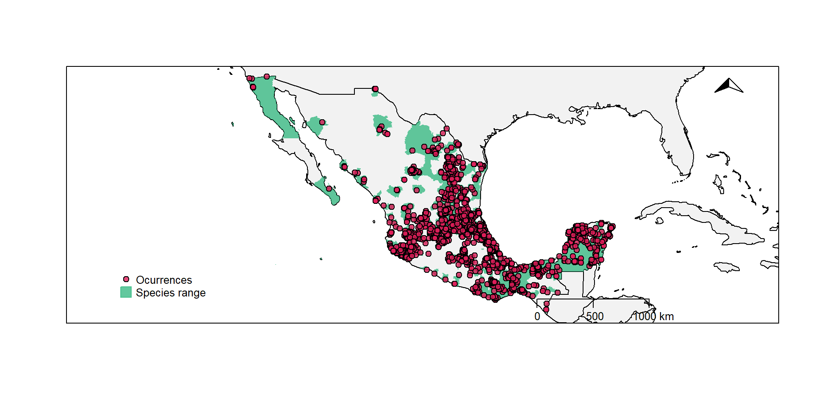

Distribución de Mosquitos con Importancia
en Salud Pública en México
Felipe Dzul Manzanilla
Fabián Correa Morales
Herón Huerta
2022-06-02


Temas
- Fuentes de Información y Flujograma
- Organizacion
Flujograma de la Información
Organización de las Bases de Datos
Organización de las Bases de Datos
/Users/HOME/Dropbox/projects/culicidae_mx/1.datasets/1.1.raw_data
├── 1.1.1.original
│ ├── Actualizada 2022. 22-09.xlsx
│ ├── Anopheles_2015_2022_InDRE.xlsx
│ ├── Base de datos_mosquitos_SANTOS_ultima version.xlsx
│ ├── base_datosAldo.xlsx
│ └── Base_mosquitos_ID_HH 2015-2020.xlsx
└── 1.1.2.rename
├── anopheles_indre_dataset.xlsx
├── culicidae_aldo_dataset.xlsx
├── culicidae_indre_dataset.xlsx
├── culicidae_review_dataset.xlsx
└── culicidae_ro_dataset.xlsxRegistros de Aedes aegypti
| dataset | specie | occ | occ_unique |
|---|---|---|---|
| cdmx | Aedes aegypi | 13 | 12 |
| gbif_geodata | Aedes aegypi | 1329 | 1237 |
| gbif_spocc | Aedes aegypi | 7042 | 2149 |
| indre | Aedes aegypi | 3845 | 972 |
| ro | Aedes aegypi | 205 | 4 |
| veim | Aedes aegypi | 11083 | 459 |
Registros
| dataset | specie | occ | occ_unique |
|---|---|---|---|
| cdmx | Aedes aegypi | 13 | 12 |
| cdmx | Aedes albopictus | 2 | 2 |
| cdmx | Aedes epactius | 972 | 134 |
| cdmx | Aedes scapularis | 1 | 1 |
| cdmx | Anopheles punctipennis | 3 | 3 |
| cdmx | Anopheles aztecus | 68 | 12 |
| cdmx | Culex (Lutzia) bigoti | 5 | 4 |
| cdmx | Culex apicalis | 30 | 6 |
| cdmx | Culex arizonensis | 60 | 16 |
| cdmx | Culex bidens | 8 | 6 |
| cdmx | Culex coronator | 4 | 3 |
| cdmx | Culex erraticus | 4 | 4 |
| cdmx | Culex erythrothorax | 8 | 7 |
| cdmx | Culex pinarocampa | 161 | 47 |
| cdmx | Culex quinquedasciatus | 1 | 1 |
| cdmx | Culex quinquefasciatus | 847 | 104 |
| cdmx | Culex quinquefasciatus, | 3 | 3 |
| cdmx | Culex restuans | 1 | 1 |
| cdmx | Culex salinarius | 85 | 28 |
| cdmx | Culex stigmatosoma | 734 | 125 |
| cdmx | Culex tarsalis | 61 | 27 |
| cdmx | Culex thriambus | 37 | 25 |
| cdmx | Culex trhiambus | 1 | 1 |
| cdmx | Culiseta inornata | 120 | 38 |
| cdmx | Culiseta particeps | 647 | 115 |
| cdmx | Uranotaenia lowii | 1 | 1 |
| cdmx | Uranotaenia sapphirina | 5 | 4 |
| gbif_geodata | Aedes aegypi | 1329 | 1237 |
| gbif_spocc | Aedes aegypi | 7042 | 2149 |
| gbif_spocc | Aedes albopictus | 650 | 397 |
| gbif_spocc | NA | 992 | 430 |
| indre | Aedes aegypi | 3845 | 972 |
| indre | Aedes albopictus | 454 | 251 |
| indre | Anopheles albimanus | 223 | 59 |
| indre | Anopheles aztecus | 10 | 6 |
| indre | Anopheles bradleyi | 1 | 1 |
| indre | Anopheles crucians | 1 | 1 |
| indre | Anopheles eiseni | 3 | 1 |
| indre | Anopheles parapunctipennis | 2 | 2 |
| indre | Anopheles pseudopunctipennis | 371 | 164 |
| indre | Anopheles punctipennis | 16 | 13 |
| indre | Anopheles quadrimaculatus | 1 | 1 |
| indre | Anopheles vestitipennis | 2 | 2 |
| indre | Haemagogus anastasionis | 1 | 1 |
| indre | Haemagogus equinus | 2 | 2 |
| review | Aedes Protomacleaya lewnielseni Ortega and Zavortink | 1 | 1 |
| review | Aedes Ochlerotatus amateuri Ortega and Zavortink | 1 | 1 |
| review | Aedes albopictus | 109 | 90 |
| review | Aedes bimaculatus | 1 | 1 |
| review | Aedes epactius | 1 | 1 |
| review | Aedes fluviatilis | 1 | 1 |
| review | Aedes fulvus | 1 | 1 |
| review | Aedes gabriel | 1 | 1 |
| review | Aedes Howardina cozumelensis Díaz‐Nájera, 1966 | 1 | 1 |
| review | Aedes melanimon | 1 | 1 |
| review | Aedes Ochlerotatus angustivittatus Dyar and Knab, 1907 | 1 | 1 |
| review | Aedes Ochlerotatus angustivittatus Dyar and Knab, 1908 | 1 | 1 |
| review | Aedes Ochlerotatus angustivittatus Dyar and Knab, 1909 | 1 | 1 |
| review | Aedes Ochlerotatus euplocamus Dyar & Knab, 1906 | 1 | 1 |
| review | Aedes Ochlerotatus euplocamus Dyar & Knab, 1907 | 1 | 1 |
| review | Aedes Ochlerotatus euplocamus Dyar & Knab, 1908 | 1 | 1 |
| review | Aedes Ochlerotatus fulvus Wiedemann, 1828 | 2 | 2 |
| review | Aedes Ochlerotatus Scapularis Group species | 2 | 2 |
| review | Aedes Ochlerotatus scapularis Rondani, 1848 | 1 | 1 |
| review | Aedes Ochlerotatus serratus Theobald, 1901 | 3 | 3 |
| review | Aedes Ochlerotatus taeniorhynchus Wiedemann, 1821 | 3 | 3 |
| review | Aedes podographicus | 1 | 1 |
| review | Aedes podographicus s.l. | 2 | 2 |
| review | Aedes Stegomyia aegypti Linnaeus, 1762 | 2 | 2 |
| review | An. gabaldoni | 4 | 4 |
| review | Anopheles Anopheles apicimacula Dyar & Knab, 1906 | 1 | 1 |
| review | Anopheles Anopheles apicimacula Dyar & Knab, 1907 | 1 | 1 |
| review | Anopheles Anopheles crucianss.l. Wiedemann, 1828 | 1 | 1 |
| review | Anopheles Anopheles crucianss.l. Wiedemann, 1829 | 1 | 1 |
| review | Anopheles Anopheles crucianss.l. Wiedemann, 1830 | 1 | 1 |
| review | Anopheles Anopheles crucianss.l. Wiedemann, 1831 | 1 | 1 |
| review | Anopheles Anopheles pseudopunctipennis Theobald, 1901 | 1 | 1 |
| review | Anopheles Anopheles veruslanei Vargas, 1979 | 1 | 1 |
| review | Anopheles Anopheles veruslanei Vargas, 1980 | 1 | 1 |
| review | Anopheles Anopheles vestitipennis Dyar & Knab, 1906 | 1 | 1 |
| review | Anopheles Anopheles vestitipennis Dyar & Knab, 1907 | 1 | 1 |
| review | Anopheles Anopheles vestitipennis Dyar & Knab, 1908 | 1 | 1 |
| review | Anopheles crucians s.l. | 2 | 2 |
| review | Anopheles darlingi | 37 | 25 |
| review | Anopheles Nyssorhynchus albimanus Wiedemann, 1820 | 1 | 1 |
| review | Anopheles Nyssorhynchus albimanus Wiedemann, 1821 | 1 | 1 |
| review | Anopheles Nyssorhynchus albimanus Wiedemann, 1822 | 1 | 1 |
| review | Anopheles Nyssorhynchus albimanus Wiedemann, 1823 | 1 | 1 |
| review | Coquillettidia Rhynchotaenia venezuelensis Theobald, 1912 | 3 | 3 |
| review | Culex Melanoconion theobaldi | 1 | 1 |
| review | Culex bihaicola | 1 | 1 |
| review | Culex Culex coronators.l. Dyar & Knab, 1906 | 1 | 1 |
| review | Culex Culex coronators.l. Dyar & Knab, 1907 | 1 | 1 |
| review | Culex Culex interrogator Dyar & Knab, 1906 | 1 | 1 |
| review | Culex Culex interrogator Dyar & Knab, 1907 | 1 | 1 |
| review | Culex Culex nigripalpus Theobald, 1901 | 1 | 1 |
| review | Culex Culex nigripalpus Theobald, 1902 | 1 | 1 |
| review | Culex Culex nigripalpus Theobald, 1903 | 1 | 1 |
| review | Culex Culex quinquefasciatus Say, 1823 | 1 | 1 |
| review | Culex Culex quinquefasciatus Say, 1824 | 1 | 1 |
| review | Culex daumastocampa | 1 | 1 |
| review | Culex inflictus | 2 | 2 |
| review | Culex lactator | 6 | 6 |
| review | Culex Melanoconion erraticus Dyar & Knab, 1906 | 2 | 2 |
| review | Culex Melanoconion taeniopus Dyar & Knab, 1907 | 1 | 1 |
| review | Culex Melanoconion taeniopus Dyar & Knab, 1908 | 1 | 1 |
| review | Culex metempsytus | 4 | 3 |
| review | Culex mutator | 2 | 2 |
| review | Culex pedroi | 3 | 2 |
| review | Culex rejector | 14 | 10 |
| review | Culex restrictor | 3 | 2 |
| review | Culex salinarius | 1 | 1 |
| review | Culex spissipes | 3 | 3 |
| review | Culex trifidus | 2 | 2 |
| review | Cx. lactator | 1 | 1 |
| review | Cx. trifidus | 6 | 6 |
| review | Haemagogus Haemagogus equinus Theobald, 1903 | 1 | 1 |
| review | Haemagogus Haemagogus equinus Theobald, 1904 | 1 | 1 |
| review | Haemagogus Haemagogus equinus Theobald, 1905 | 1 | 1 |
| review | Haemagogus Haemagogus equinus Theobald, 1906 | 1 | 1 |
| review | Limatus durhamii Theobald, 1901 | 1 | 1 |
| review | Limatus durhamii Theobald, 1902 | 1 | 1 |
| review | Limatus durhamii Theobald, 1903 | 1 | 1 |
| review | Limatus durhamii Theobald, 1904 | 1 | 1 |
| review | Mansonia dyari | 1 | 1 |
| review | Psorophora Janthinosoma ferox | 1 | 1 |
| review | Psorophora Psorophora cilipes | 1 | 1 |
| review | Psorophora cingulata | 2 | 2 |
| review | Psorophora columbiae | 2 | 2 |
| review | Psorophora cyanescens | 1 | 1 |
| review | Psorophora Janthinosoma albipes Theobald, 1907 | 2 | 2 |
| review | Psorophora Janthinosoma champerico Dyar & Knab, 1906 | 1 | 1 |
| review | Psorophora Janthinosoma cyanescens Coquillett, 1902 | 2 | 2 |
| review | Psorophora Janthinosoma ferox von Humboldt, 1819 | 3 | 3 |
| review | Psorophora Janthinosoma lutzii Theobald, 1901 | 3 | 3 |
| review | Psorophora lineata | 2 | 2 |
| review | Psorophora Psorophora ciliata Fabricius, 1794 | 2 | 2 |
| review | Psorophora varipes | 3 | 3 |
| review | Shannoniana moralesi | 11 | 11 |
| review | Uranotaenia nataliae | 3 | 3 |
| review | Uranotaenia sapphirina | 9 | 9 |
| review | Uranotaenia socialis | 1 | 1 |
| review | Wyeomyia guatemala s.l. | 4 | 4 |
| review | Wyeomyia mitchellii | 1 | 1 |
| review | Wyeomyia nigritubus | 1 | 1 |
| review | Wyeomyia Wyeomyia celaenocephala Dyar & Knab, 1906 | 1 | 1 |
| review | Wyeomyia Wyeomyia celaenocephala Dyar & Knab, 1907 | 1 | 1 |
| ro | Aedeomyia squamipennis | 8 | 2 |
| ro | Aedes aegypi | 205 | 4 |
| ro | Aedes albopictus | 459 | 10 |
| ro | Aedes angustivittatus | 126 | 8 |
| ro | Aedes dupreei | 24 | 5 |
| ro | Aedes epactius | 221 | 2 |
| ro | Aedes euplocamus | 4 | 3 |
| ro | Aedes fulvus | 8 | 1 |
| ro | Aedes gabriel | 41 | 2 |
| ro | Aedes infirmatus | 12 | 6 |
| ro | Aedes Ochlerotatus sp | 4 | 2 |
| ro | Aedes podographicus | 14 | 5 |
| ro | Aedes ramirezi | 3 | 1 |
| ro | Aedes scapularis | 1242 | 15 |
| ro | Aedes serratus | 3 | 2 |
| ro | Aedes sp | 187 | 8 |
| ro | Aedes sp1 | 5 | 2 |
| ro | Aedes sp2 | 2 | 2 |
| ro | Aedes sp3 | 2 | 2 |
| ro | Aedes taeniorhynchus | 2493 | 7 |
| ro | Aedes tormentor | 92 | 5 |
| ro | Aedes tortilis | 7 | 2 |
| ro | Aedes triseriatus | 15 | 2 |
| ro | Aedes trivittatus | 23 | 7 |
| ro | Aedes vexans | 33 | 2 |
| ro | Anopheles albimanus | 5 | 3 |
| ro | Anopheles bradleyi | 4 | 1 |
| ro | Anopheles eiseni | 9 | 3 |
| ro | Anopheles pseudopunctipennis | 51 | 11 |
| ro | Anopheles sp | 81 | 3 |
| ro | Anopheles veruslanei | 1 | 1 |
| ro | Anopheles vestitipennis | 4 | 1 |
| ro | Chagasia bathana | 1 | 1 |
| ro | Coquillettidia nigricans | 42 | 6 |
| ro | Coquillettidia perturbans | 14 | 1 |
| ro | Coquillettidia sp | 1 | 1 |
| ro | Coquillettidia venezuelensis | 3 | 3 |
| ro | Culex bidens | 12 | 6 |
| ro | Culex chidesteri | 54 | 7 |
| ro | Culex conspirator | 15 | 6 |
| ro | Culex corniger | 13 | 7 |
| ro | Culex coronator | 175 | 15 |
| ro | Culex crybda | 4 | 4 |
| ro | Culex declarator | 2 | 2 |
| ro | Culex dunni | 7 | 2 |
| ro | Culex erraticus | 3 | 2 |
| ro | Culex interrogator | 647 | 3 |
| ro | Culex iolambdis | 2 | 1 |
| ro | Culex lactator | 57 | 8 |
| ro | Culex Melanoconion sp | 128 | 12 |
| ro | Culex nigripalpus | 2145 | 11 |
| ro | Culex panocossa | 220 | 5 |
| ro | Culex quinquefasciatus | 26 | 4 |
| ro | Culex restrictor | 5 | 1 |
| ro | Culex restuans | 28 | 5 |
| ro | Culex sandrae | 17 | 1 |
| ro | Culex sp | 1218 | 21 |
| ro | Culex sp1 | 10 | 2 |
| ro | Culex sp2 | 18 | 2 |
| ro | Culex sp3 | 3 | 1 |
| ro | Culex stenolepis | 7 | 5 |
| ro | Culex stigmatosoma | 15 | 2 |
| ro | Culex taeniopus | 1 | 1 |
| ro | Culex tarsalis | 19 | 2 |
| ro | Culex theobaldi | 1 | 1 |
| ro | Culex thriambus | 4 | 1 |
| ro | Haemagogus equinus | 4 | 2 |
| ro | Haemagogus mesodentatus | 42 | 4 |
| ro | Haemagogus regalis | 26 | 3 |
| ro | Johnbelkinia ulopus | 6 | 3 |
| ro | Limatus assuleptus | 6 | 3 |
| ro | Limatus sp | 1 | 1 |
| ro | Mandonia indubitans | 17 | 4 |
| ro | Mansonia dyari | 1 | 1 |
| ro | Mansonia indubitans | 2 | 2 |
| ro | Mansonia titillans | 42 | 7 |
| ro | NA | 56 | 3 |
| ro | NA sp | 2 | 1 |
| ro | Psorophora albipes | 4 | 2 |
| ro | Psorophora ciliata | 8 | 4 |
| ro | Psorophora confinnis | 4 | 2 |
| ro | Psorophora cyanescens | 4 | 3 |
| ro | Psorophora ferox | 74 | 9 |
| ro | Psorophora sp | 10 | 5 |
| ro | Psorophora sp1 | 1 | 1 |
| ro | Psorophora sp2 | 1 | 1 |
| ro | Psorophora varipes | 1 | 1 |
| ro | Psorphora ferox | 1 | 1 |
| ro | Sabethes chloropterus | 20 | 6 |
| ro | Toxorhynchites theobaldi | 3 | 2 |
| ro | Trichoprosopon digitatum | 3 | 2 |
| ro | Uranotaenia calosomata | 1 | 1 |
| ro | Uranotaenia coatzacoalcos | 2 | 1 |
| ro | Uranotaenia geometrica | 14 | 5 |
| ro | Uranotaenia leucoptera | 33 | 6 |
| ro | Uranotaenia lowii | 138 | 12 |
| ro | Uranotaenia pulcherrima | 1 | 1 |
| ro | Uranotaenia saphirina | 1 | 1 |
| ro | Uranotaenia socialis | 1 | 1 |
| ro | Uranotaenia sp | 6 | 2 |
| ro | Wyeomyia abebela | 24 | 6 |
| ro | Wyeomyia sp | 17 | 4 |
| veim | Aedes aegypi | 11083 | 459 |
| veim | Aedes albopictus | 1353 | 183 |
| veim | Aedes otra | 1360 | 117 |
| veim | Anopheles albimanus | 378 | 81 |
| veim | Anopheles otra | 29 | 14 |
| veim | Anopheles pseudopunctipennis | 826 | 138 |
| veim | Anopheles vestitipennis | 1 | 1 |
| veim | Culex coronator | 313 | 92 |
| veim | Culex quinquefasciatus | 1060 | 181 |
| veim | Culex salinarius | 1 | 1 |
| veim | Culex stigmatosoma | 242 | 41 |
| veim | Culex tarsalis | 43 | 14 |
| veim | Culex thriambus | 15 | 9 |
Rangos de Distribución

Rangos de Distribución

Log Gaussian Cox Process
Modelo General \[ \varLambda{_s} = exp(n{_s})\]
El modelo asume que los eventos (ocurrencia) son una parcial realización de un proceso Gausiano (log-Gaussian).
Modelo en un Grid
\[\varLambda_{ij} = \int\limits_{s_{ij}}^{} exp(n(s))ds\] \[\varLambda_{ij} \approx |s_{ij}| exp(n_{ij})\] donde \(|s_{ij}|\) es el área de la celda \(s_{ij}\)
\(y_{ij}|n_{ij} \sim Poisson(|s_{ij}|exp(n_{ij}))\)
\(n_{ij} = \beta{_0} + \beta{_1} \space x \space cov (s_{ij}) + f{_s}(s_{ij}) + f{_u}(s_{ij})\)
Moraga et al 2022
Log Gaussian Cox Process
Log Gaussian Cox Process
*** inla.core.safe: rerun to try to solve negative eigenvalue(s) in the Hessian Dios Botic!
Bio : https://fdzul.github.io/web_site_fadm/
email : felipe.dzul.m@gmail.com
celular : 8139945623
slides: https://rad-peony-f290a5.netlify.app/talks/culicidae_mx_dataset
.footnote[La presentación fue creada via xaringan, revealjs, remark.js, knitr, & R Markdown en R & RStudio.]